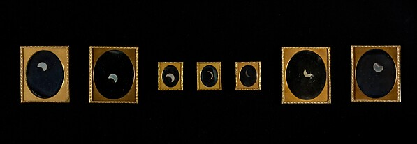
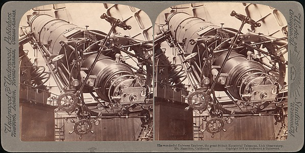
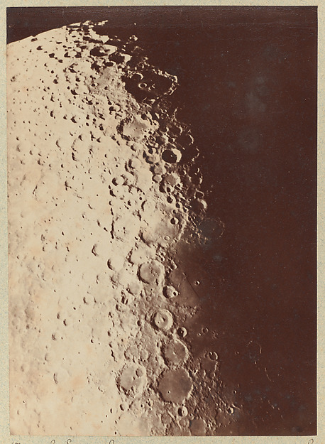
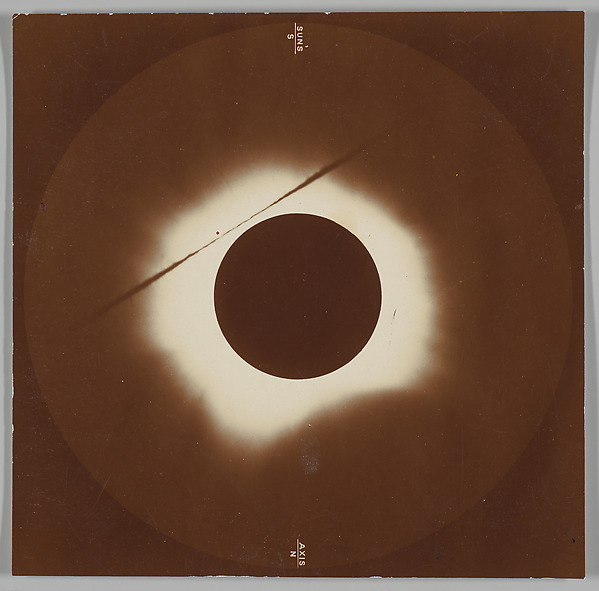
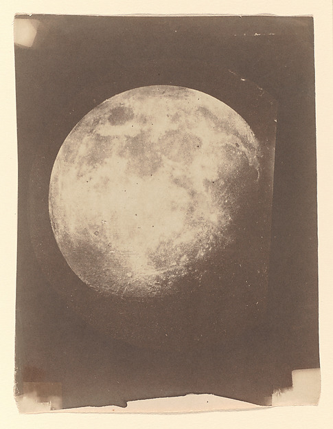
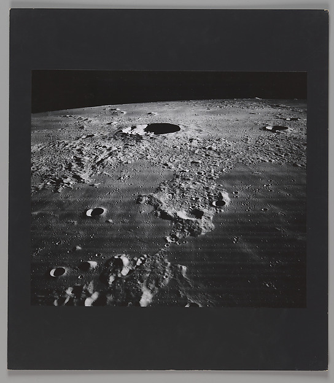
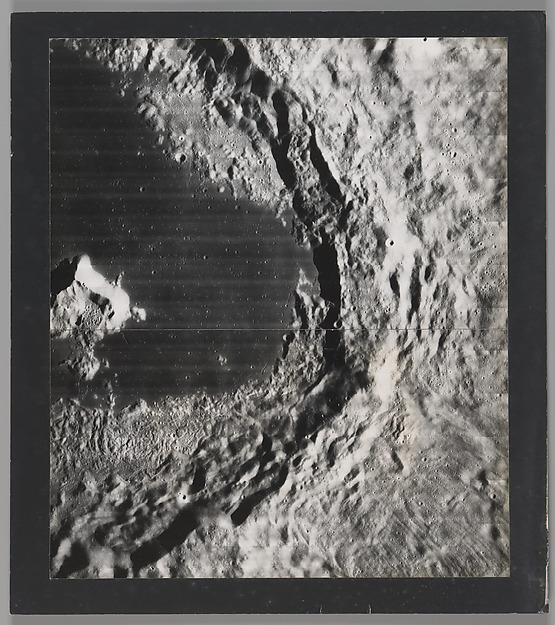
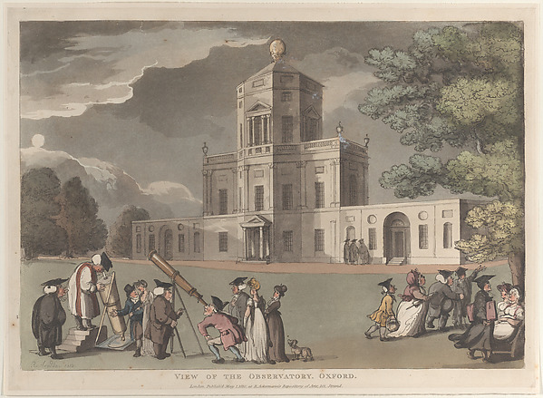

观测记录：高度即曝光时长
下面每一条带子的高度，等于当晚快门压住的秒数；亮度等于那一夜的极光强度。带子之间的 4px 空隙是片基。右侧读数表用的是当年的磁力计原始值，单位为纳特斯拉。








磁力计原始读数
| 日期 | 曝光 | 强度 | 磁偏角 | 判读 |
|---|---|---|---|---|
| 1957-11-04 | 30 s | 4 级 | 18.4 nT | 幕帘自东向西铺满半个天顶 |
| 1958-02-17 | 45 s | 6 级 | 31.7 nT | 绿色边缘出现淡红，肉眼可见 |
| 1960-10-02 | 15 s | 2 级 | 7.2 nT | 只有北侧一条弱弧，云占七成 |
| 1969-03-23 | 60 s | 7 级 | 44.2 nT | 整夜没有星星 |
| 1972-01-19 | 20 s | 3 级 | 11.6 nT | 云隙间曝光两次，第二次作废 |
| 1973-09-08 | 40 s | 5 级 | 26.9 nT | 磁针在 03:14 抖了一下 |
| 1974-12-01 | 90 s | 8 级 | 58.3 nT | 全夜最强，片基上留下连续拖尾 |
| 1978-11-30 | 25 s | 1 级 | 3.4 nT | 停用前最后一次走片，仅记录本底 |
齿孔编号每 5 年整体偏移 0.3mm；它不参与导航，点击也不响应。
仪器与介质：光在时间上的累积
长曝光不是把颜色调暗，而是让光在片基上累积。极光幕在 30 秒里缓慢横移，每个瞬间都往同一张底片上落一层；幕帘停留得越久，那一处的密度就越高。所以这条带子看起来像被拉长的幕布，而不是一块发光的雾。
画面里所有颜色都来自位图与实色：影像带是真实的历史银盐照片，其余部分只有四个色值与由它们派生的界面色调。全站没有一处 CSS 色彩插值函数，因此不会出现平滑色带。
介质：蛋白银盐印相、玻璃负片盐纸印相、明胶银盐印相、银版照片。暗部颗粒保留原样，未做降噪与锐化。
这台仪器怎么说话
胶片库房的调阅请求只有四种结果：调出来了、还在扫、这一卷不在架上、以及这一卷本来就没有。前四个按钮分别对应它们；1979 年的片盒尚未归档，库房编号还没分配，所以那一项按不动。
1979 年的片盒尚未归档：库房编号未分配，因此在编号确定前这项保持不可用。
按下任一按钮，这里会给出库房的回话。